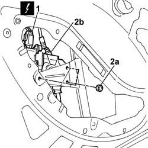
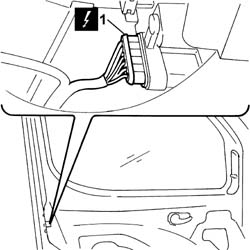
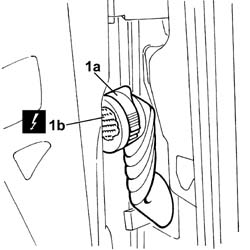
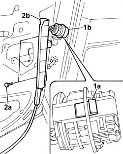
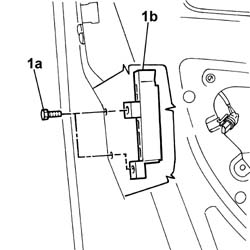
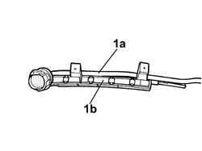

7005D23 front side door descending window glass guide one r r
- Path
- Procedures > 70 FITTINGS > 7005 PASSENGER COMPARTMENT FRONT SIDE DOORS > 7005D front side door window glasses > 7005D23 front side door descending window glass guide one r r
- Kind
- repair procedure (removal / refitting; the operation number is the code)
- Applies to
- all engines; all production periods
- Interactive page
- https://sloeber94.github.io/elrnDB-fDbl/en/#/2585005
Applies to: all engines; all production periods
 Removing
Removing
 Refitting
RefittingDisconnect the battery negative terminal.
Op. 7005D38 FRONT SIDE DOOR MANUAL WINDOW MECHANISM HANDLE / RING NUT - R.R.
Op. 7005E10 FRONT SIDE DOOR INTERIOR PANEL - R.R.
Op. 7005A04 FRONT SIDE DOOR WATER GUARD PROTECTION - R.R. OR POSITION WITH DOOR PANEL REMOVED
Applies to: all engines; all production periods
Refitting
RemovingOp. 7005A04 FRONT SIDE DOOR WATER GUARD PROTECTION - R.R. OR POSITION WITH DOOR PANEL REMOVED
Op. 7005E10 FRONT SIDE DOOR INTERIOR PANEL - R.R.
Op. 7005E38 FRONT SIDE DOOR INTERIOR HANDLE- R.R.
Connect the battery negative terminal.
Applies to: all engines; all production periods; only with equipment: Electric front windows
Removing
RefittingDisconnect the battery negative terminal.
Applies to: all engines; all production periods; only with equipment: Electric front windows and Cargo trim level
Op. 7005E10 FRONT SIDE DOOR INTERIOR PANEL - R.R.
Op. 7005A04 FRONT SIDE DOOR WATER GUARD PROTECTION - R.R. OR POSITION WITH DOOR PANEL REMOVED
Applies to: all engines; all production periods; only with equipment: Electric front windows and Doblò trim level
Op. 7005E18 FRONT SIDE DOOR ARMREST - R.R.
Op. 7005E38 FRONT SIDE DOOR INTERIOR HANDLE- R.R.
Op. 7005E30 ODDMENTS POCKET ON FRONT SIDE DOOR - R.R.
Op. 7005A05 FRONT SIDE DOOR WATER GUARD PROTECTION- R.R. OR ARRANGE
Op. 7005E10 FRONT SIDE DOOR INTERIOR PANEL - R.R.
1. Disconnect the electrical connector for the front electric window motor.
 | Name | Connector |
|---|---|---|
1 | Front left electric window motor |
| Name | Connector |
|---|---|---|
1 | Front right electric window motor | See N61 FRONT RIGHT ELECTRIC WINDOW MOTOR ( FRONT PASSENGER DOOR ) |
2. Undo the fixing nuts (2a) and move the electric window motor (2b) aside.

Applies to: all engines; all production periods; only with equipment: Electric front windows
1. Disconnect the electrical connector for the front door locking gearmotor.
| Name | Connector |
|---|---|---|
1 | Left front door lock geared motor |
| Name | Connector |
|---|---|---|
1 | Right front door lock geared motor |

Applies to: all engines; all production periods; only with equipment: Electric front windows
1. Raise the lever (1a) and disconnect the electrical connector (1b).
| Name | Connector |
|---|---|---|
1b | Front left door connection |
| Name | Connector |
|---|---|---|
1b | Front right door connection |

Applies to: all engines; all production periods; only with equipment: Electric front windows
1. Release the lug (1a) and remove the connector (1b) from its seating.
2. Undo the fixing bolts (2a) on the bodywork and remove the window front guide (2b).

Applies to: all engines; all production periods; only with equipment: Electric front windows
Release the door wiring loom from the retaining bands and remove the front guide complete with door electrical wiring.
1. Undo the bolts (1a) and remove the window rear guide (1b).

Applies to: all engines; all production periods; only with equipment: Electric front windows
1. At the bench, separate the wiring loom (1a) from the window front guide (1b).

Applies to: all engines; all production periods; only with equipment: Electric front windows and Doblò trim level
Refitting
RemovingUsing new retaining bands, secure the door electrical wiring to the window front guide.
Fit the window rear guide and secure it with its bolts.
Position the front guide complete with door wiring and secure it with the bolts to the bodywork.
Fit the door electrical connector in its seating.
Secure the door electrical wiring to the retaining bands.
Connect the electrical connectors for the electric window motor and front door locking gearmotor.
| Name | Connector |
|---|---|---|
- | Front left electric window motor |
| Name | Connector |
|---|---|---|
- | Front right electric window motor | See N61 FRONT RIGHT ELECTRIC WINDOW MOTOR ( FRONT PASSENGER DOOR ) |
| Name | Connector |
|---|---|---|
- | Left front door lock geared motor |
| Name | Connector |
|---|---|---|
- | Right front door lock geared motor |
Connect the front door electrical connector.
| Name | Connector |
|---|---|---|
- | Front left door connection |
| Name | Connector |
|---|---|---|
- | Front right door connection |
Op. 7005E10 FRONT SIDE DOOR INTERIOR PANEL - R.R.
Op. 7005A05 FRONT SIDE DOOR WATER GUARD PROTECTION- R.R. OR ARRANGE
Op. 7005E30 ODDMENTS POCKET ON FRONT SIDE DOOR - R.R.
Op. 7005E38 FRONT SIDE DOOR INTERIOR HANDLE- R.R.
Op. 7005E18 FRONT SIDE DOOR ARMREST - R.R.
Connect the battery negative terminal.
Applies to: all engines; all production periods; only with equipment: Electric front windows and Cargo trim level
Op. 7005A04 FRONT SIDE DOOR WATER GUARD PROTECTION - R.R. OR POSITION WITH DOOR PANEL REMOVED
Topics linked from this page (14)
- 7005A04 front side door water guard protection - r r or replace with door panel removed
- 7005A05 front side door water guard protection r r or arrange
- 7005D22 front side door descending window glass guide (one) - r r with door panel (and support frame) removed
- 7005D38 front side door manual window mechanism handle ring-nut - r r
- 7005E10 front side door inner panel - r r for replacement
- 7005E18 front side door arm rest r r
- 7005E30 object pouch on one front side door r r
- 7005E38 front side door interior handle-r r
- D30 FRONT LEFT DOOR CONNECTION
- D031 REAR/PASSENGER FRONT DOOR COUPLING
- N50 LEFT FRONT DOOR LOCK GEARED MOTOR
- N051 PASSENGER FRONT DOOR LOCK GEARED MOTOR
- N060 DRIVER'S FRONT DOOR ELECTRIC WINDOW MOTOR
- N61 FRONT RIGHT ELECTRIC WINDOW MOTOR ( FRONT PASSENGER DOOR )